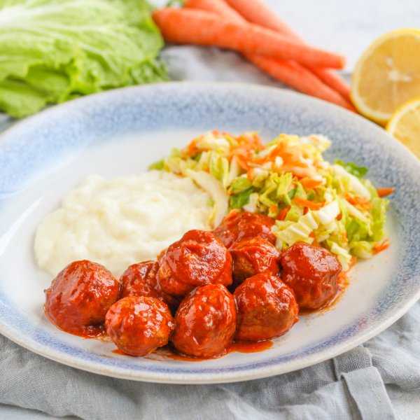

BBQ Turkey Meatballs with Mashed Potatoes & Tangy Coleslaw

Total Time
35 min
Nutrition (per serving)
681.8 kcalCalories
44 gProtein
59.9 gCarbs
32.2 gFat
Full nutrition table
| Calories | 681.8 kcal |
| Total fat | 32.2 g |
| Saturated fat | 6.6 g |
| Trans fat | 0.2 g |
| Cholesterol | 120.4 mg |
| Sodium | 235.3 mg |
| Carbohydrates | 59.9 g |
| Fiber | 10.3 g |
| Sugars | 15.8 g |
| Protein | 44 g |
| Potassium | 2383.3 mg |
| Calcium | 304.1 mg |
| Iron | 6.9 mg |
| Vitamin A | 1358.3 IU |
| Vitamin C | 89.9 mg |
| Vitamin D | 39.4 IU |
Cookware
Ingredients
- 2 mediumcarrots
- 2 clovesgarlic
- 1 ½ lbground turkey
- 1lemon
- 1 medium headnapa cabbage
- 4 mediumred potatoes
- 2 (8 oz) canstomato sauce
- 4 fl ozwhole milk
- apple cider vinegar
- black pepper
- brown sugar
- chili powder
- cumin, ground
- Dijon mustard
- extra virgin olive oil
- panko bread crumbs
- paprika
- salt
Steps
- Wash and dry the fresh produce.4 medium red potatoes
1 lemon
2 medium carrots
1 medium head napa cabbage - Peel and large dice potatoes. Transfer to a medium saucepan, cover with hot water (from the tap), and bring to a boil. Reduce heat to medium and cook until potatoes can be easily pierced with a fork, 10-12 minutes. Drain and return to the saucepan.
- Meanwhile, peel and mince garlic; place in a medium bowl along with turkey, bread crumbs, chili powder, and salt. Using your hands, mix well to combine.2 cloves garlic
1 ½ lb ground turkey
¼ cup panko bread crumbs
4 tsp chili powder
1 tsp salt - Using a tablespoon measure, form the turkey mixture into rounded meatballs and place on a plate.
- Preheat a large skillet over medium-high heat.
- Once the skillet is hot, add oil and swirl to coat the bottom. Add meatballs and cook, turning occasionally, until browned on all sides, about 4 minutes (the meatballs will not be cooked all the way through). Remove to a clean plate.4 tsp extra virgin olive oil
- Once the meatballs have been removed, return the skillet (with cooking juices) to medium heat. Add tomato sauce, vinegar, sugar, and spices; stir to combine the sauce and bring to a simmer.2 (8 oz) cans tomato sauce
¼ cup apple cider vinegar
2 tsp brown sugar
2 tsp cumin, ground
½ tsp paprika
½ tsp salt
½ tsp black pepper - Once the sauce is simmering, return meatballs to the skillet and turn to coat. Cover and simmer, stirring occasionally, until the meatballs are cooked through, about 6 minutes.
- Meanwhile, juice lemon into another medium bowl; add oil, Dijon, salt, and pepper. Whisk to combine the dressing.4 tsp extra virgin olive oil
2 tsp Dijon mustard
½ tsp salt
¼ tsp black pepper - Peel, trim, and coarsely grate carrots; add to the bowl with the dressing.
- Trim off and discard the root end of the cabbage; halve lengthwise, then thinly slice crosswise into shreds. Add to the bowl and stir to combine the coleslaw.
- Add milk, oil, salt, and pepper to the saucepan with the potatoes and mash until smooth.4 fl oz (½ cup) whole milk
2 tbsp extra virgin olive oil
½ tsp salt
½ tsp black pepper - To serve, divide mashed potatoes, coleslaw, and saucy meatballs between plates. Enjoy!